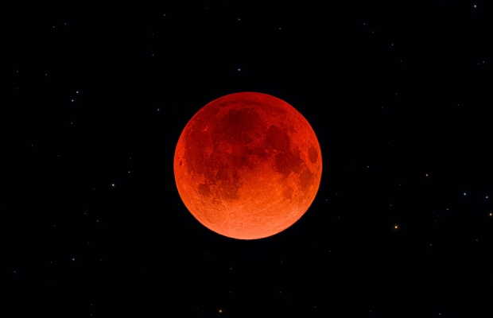
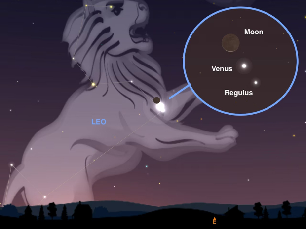

Core focus of National Geographic's mission, offering engaging content that covers groundbreaking discoveries, scientific
exploration, and the latest advancements across various disciplines. It serves as a platform for understanding our world and
beyond, emphasizing education and inspiration.
Science
January 18: Saturn and Venus conjunction

March 14: Total lunar eclipse and blood moon
9 must-see night sky events to look forward to in 2025
December 13 to 14: Geminid meteor shower peaks
A partial solar eclipse. Numerous eye-catching planetary get-togethers.
Saturn's rings perform a vanishing act. In the upcoming year, stargazers
can anticipate an array of celestial wonders to get excited for.
Get ready for a stellar array of celestial marvels in 2025. The star attractions
include both a solar and lunar eclipse—and a spectacular meteor shower.
That's not all—keep an eye out for the moon cozying up with the nearest and
brightest planets, all visible without any special gear. This year, Saturn will
even put on its own disappearing act. Mark your calendars—these are the
can't-miss cosmic events that will have you looking up in awe all year long.
March 29: Partial solar eclipse

September 19: Moon, Venus, and Regulus in celestial group hug
June 26: Moon and Mercury meet up
September 7: Another total lunar eclipse and blood moon
November 8: Saturn's rings vanish
August 12: Venus and Jupiter's close encounter
The Geminids meteor shower peaks this week—here's what causes them
The best time to watch for shooting stars is during the peak of an annual meteor shower. Here's everything you need to know about these
spectacular displays.
When you wish upon a falling star, you're actually offering your hopes and dreams to a small piece of space rock burning
up as it plummets through Earth's atmosphere. Known as meteors, these brilliant streaks of light have entranced humans
for centuries, especially when they arrive in bursts of blazing glory during sky shows called meteor showers.
Scientists have known since the mid-1800s that almost all meteor showers are born from icy comets. When one of these
visitors from deep space enters the inner part of the solar system, heat from the sun causes ices on the comet's surface
to change from ice to gas, a process called sublimation. This is what produces a comet's beautiful tail.
As the ices vaporize, the comet releases dust, sand grain-size particles, and even a few boulder-sized chunks of stone
that get left behind in its wake. With each orbit, that process creates a stream of debris along the comet's path that
persists long after the dirty iceball has headed back out to the edges of the solar system.
A small number of meteor showers buck the trend and originate from
asteroids, not comets. The Geminids fall into this category and are thought
to come from the asteroid 3200 Phaethon.
Scientists aren't exactly sure
how the space rock achieves such a dazzling display. But one study posits
that the asteroid is part of a larger planetary body, possibly a comet, that
broke up in a collision or explosion, and the resulting debris
gives us the meteor shower.
There are actually 4 types of pneumonia. These are the differences.
As cold and flu season ramps up, cases of pneumonia are up too. Here are the different types of pneumonia to look
out for as the winter months settle in.
Pneumonia is the world's leading cause of death for children under the age of five, and the leading cause of
hospitalization for adults in the United States, with over one million admissions per year; about
40,000 Americans die from the disease annually. Pneumonia, which can range from mild to life-threatening, is caused
by inflammation within the tiny air sacs in the lungs. It can lead to deadly consequences—including a lack of oxygen
and blood infections—if left untreated.
The four main types of pneumonia that are characterized based on the cause:
bacterial, viral, fungal, and hospital-acquired.
For the most part, “there's no way to tell if a pneumonia is being caused by a
bacterium, a virus, or a fungi just by examination,” Wu says. “Most pneumonias don't
ultimately get a diagnosis” of what is causing it. Instead, doctors will treat pneumonia
based on a patient's symptoms and their medical history, using this information to
determine the best course of treatment.
Bacterial pneumonia, which is the most common type, is caused by bacteria, which
means that it is easily treated with an antibiotic. For many patients, treating pneumonia
with an antibiotic will help resolve their symptoms, and help them start to feel better
within days of starting treatment. “The earlier the treatment, the better,” Wu says.
This is why Lucy has been the face of human evolution for the last 50 years
Paleontologists unearthed the iconic fossil in 1974. Today, her legacy remains just as much cultural as it is
scientific.
The first clue that the fossilized human ancestor known as Lucy would be a global phenomenon came at a Paris airport in
December 1974. While passing through customs, paleoanthropologist Donald Johanson introduced the wrapped parcels in his
bag as fossils from Ethiopia, and a customs official replied, “You mean Lucy?”
Lucy would go on to set records in age and completeness, while confirming ideas about humans' evolutionary transition to
upright walking. Other fossils have since surpassed her in achievements, but Lucy remains a household name 50 years
later. The fossil's scientific story has been entwined with a cultural one from the very beginning.
Today's human evolution researchers are the generation raised by Lucy.
Chris Campisano, a paleoanthropologist at Arizona State University, remembers reading
Johanson's book in high school for a summer project, sparking his interest in searching
for hominin fossils in Africa.
Today, the institute that Lucy built still leads paleoanthropological research around the
world. Combining education with fundraising to support research, the impact has
proliferated far beyond Hadar.
The fossil's stardom has had a “domino effect,” says Alemseged, who is Ethiopian and
first met Lucy while working at the National Museum of Ethiopia in Addis Ababa, where
she is currently stored in a specially constructed safe.
Europa is an icy ocean world—and NASA is finally going to explore it
Italian astronomer Galileo Galilei discovered Europa and three of its sibling moons in 1610 when he pointed his
telescope at Jupiter and saw four bright dots surrounding the giant planet.
Our first close-up views came in 1979 when
NASA's Voyager probes sped past Jupiter and photographed its many satellites. Voyager 2 took high-resolution images of
Europa's exterior, showing it was chock full of long, irregular cracks and relatively devoid of craters—indicating the
surface was young and likely geologically active.
In 1996, NASA's Galileo mission flew by Europa and beamed back some extremely curious data: Apparently, this tiny frozen
moon possessed a magnetic field, something normally only found on larger bodies like the Earth.
The space physicist
Margaret Kivelson and her colleagues showed that Jupiter's magnetic field could generate one on Europa if the moon had a
gigantic global ocean of liquid saltwater beneath its crust.
“If Europa Clipper shows that icy ocean worlds are habitable,” he says, “then the implications for how common habitable
environments are in the
universe as a whole are absolutely staggering.”
 June 26: Moon and Mercury meet up
June 26: Moon and Mercury meet up August 12: Venus and Jupiter's close encounter
August 12: Venus and Jupiter's close encounter